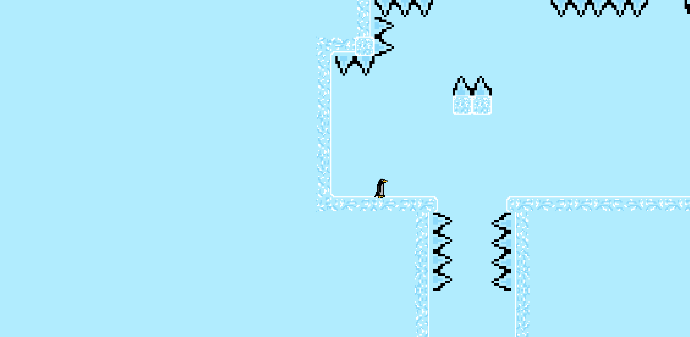

Temporal Scavenger Unity
An idle procedural generated adventure game aimed at mobile devices. This was a final year project created for Myriad Games Studio in collaboration with 5 other students. My Major roles in the project included being the Project Manager, Co-Testing lead and a programmer specifically for the UI components.
Examples of my contribution
Optimisation
As the game was aimed towards mobile platforms and needed a lot of different UI components optimising the UI was an important goal. Through researching how Unity handled updating its UI elements that often changed together were grouped under separate canvas hierarchies. This was done so that when the one element was updated it only updates the other UI items in its sub canvas rather than the entire canvas. For more information on this see this video Unity Optimisation.
Cooldown Bars
Each weapon and armour item has an ability that can be used with a cooldown. I was tasked with creating a cooldown effect. I initially started by attempting to achieve the effect using a shader but realised the gains to performance and ability to customise the effect would not be worth the time to develop so instead used a simple horizontal filled overlay that had its fill amount controlled by the cooldown of the equipped item. Finally, to add indication to the player that the ability was ready again I added a simple animation to play on button.

Inventory Display System
I was responsible for all the interface logic of swapping items in the inventory, equipping items, and dropping items. This system was a first created with bare bones functionality for initial testing with further iterations made as a result of feedback from user testing or from the client. Iterations included adding things such as the ability to show the stats of the items and the ability to compare items of the same type. This also involved the creation of test scripts to test adding of items to the inventory to test that all items were added to and displayed correctly in the inventory and in the game scene.

G-Penguin Complete Unity
Made as part of my first game development unit in my degree G-penguin is a gravity switching platformer largely inspired by the game Gravity Duck by Woblyware Oy and Ratalaika Games.
In my spare time I added mobile controls and ported an android version to my phone.
Torch Runner Complete Game Jam Godot
I was looking into different technologies for creating games in late 2019 for some smaller personal projects which led me to Godot engine which I was drawn to for its simplicity and ease of which to create rapid prototypes.
After a Month or so of learning Godot I decided the best way to see how I found the full feature set and workflow was to do a Game Jam specifically Godot Wild Jam.
The theme for the jam was second chances so I thought having a platformer where you had the second chance to regain your life through a mini game would be a good fit.